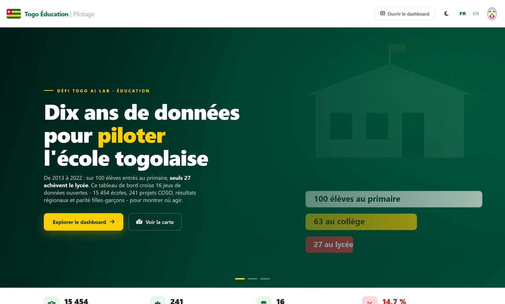
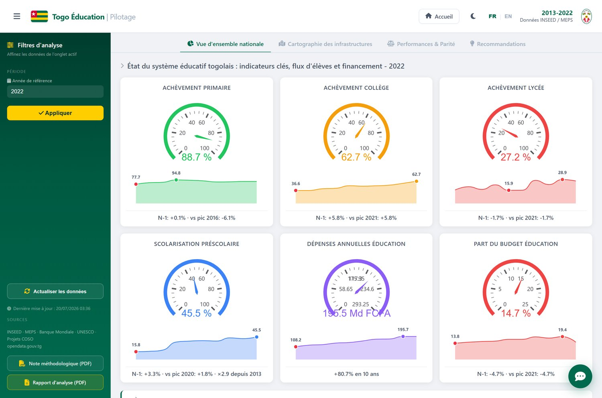
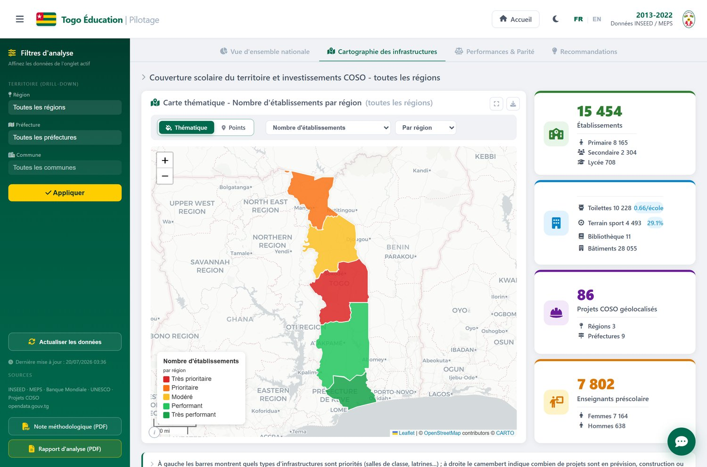
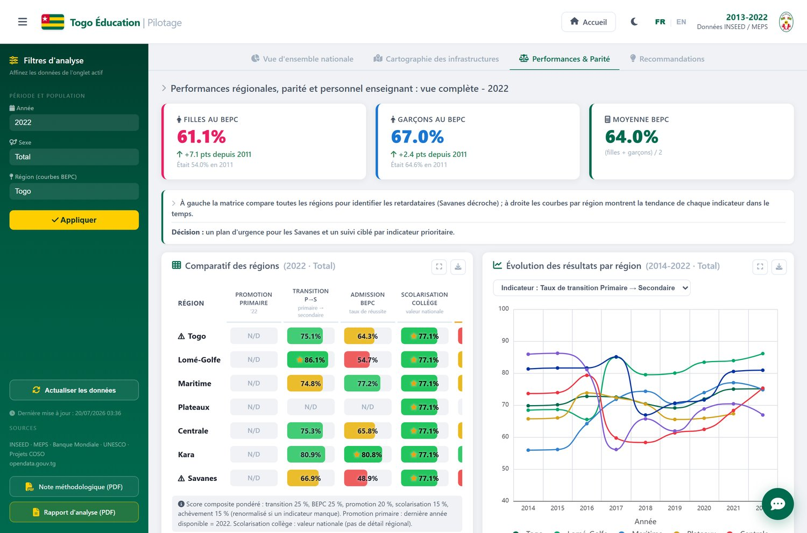
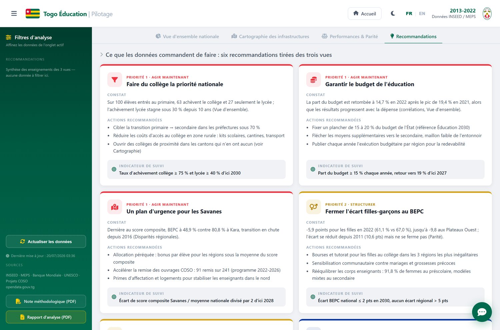
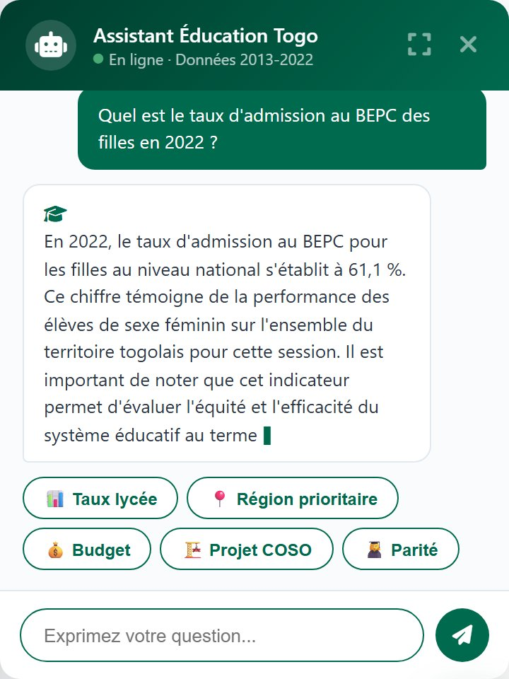

Dashboard de pilotage du système éducatif togolais — 2013-2022
Le Dashboard Éducation Togo est un outil de pilotage stratégique destiné aux décideurs du ministère de l'Enseignement primaire et secondaire (MEPS), aux partenaires techniques et financiers, et à la société civile. Il a été développé dans le cadre du Défi Togo AI Lab, initiative visant à exploiter les données ouvertes pour améliorer la planification éducative.
Le système éducatif togolais scolarise plus de 2,5 millions d'élèves répartis dans 15 454 établissements sur l'ensemble du territoire. Malgré des progrès significatifs depuis 2013 — notamment un taux d'achèvement du collège passé de 36,6 % à 62,7 % — des disparités territoriales et de genre persistent, et la part du budget allouée à l'éducation a chuté de 19,4 % (2021) à 14,7 % (2022).
Le dashboard couvre la période 2013-2022 pour les indicateurs nationaux, avec des séries longues remontant jusqu'à 1960 (Banque Mondiale). Il intègre 16 jeux de données issus de 6 sources différentes, allant des établissements scolaires aux projets d'infrastructure COSO, en passant par les résultats aux examens et les données budgétaires.
Vue d'ensemble nationale, cartographie des infrastructures, performances & parité, recommandations
Chat en langage naturel, réponses calculées sur les données en streaming · Interface bilingue FR/EN, mode sombre

Le dashboard s'appuie sur 16 jeux de données structurés, dont 14 fichiers CSV, 1 fichier GeoJSON et 1 fichier de schéma. Ces données proviennent de sources officielles togolaises et internationales.
| # | Fichier | Contenu | Source | Lignes |
|---|---|---|---|---|
| 01 | etablissements-scolaires.csv | 15 454 écoles géolocalisées | MEPS | 15 455 |
| 02 | toilettes-scolaires.csv | 10 228 toilettes géolocalisées | MEPS | 10 229 |
| 03 | batiments-electrification.csv | 28 055 bâtiments (polygones) | MEPS | 28 056 |
| 04 | bibliotheques.csv | 11 bibliothèques scolaires | MEPS | 12 |
| 05 | professeurs-schema.csv | Schéma — données privées | MEPS | 46 |
| 06 | education-resultats-scolaires.csv | Indicateurs nationaux 2013-2022 | INSEED/MEPS | 482 |
| 07 | sdg4-data-togo.csv | Indicateurs ODD4 UNESCO 1970-2023 | UNESCO | 6 102 |
| 08 | taux-promotion-primaire-region.csv | Promotion primaire par région 2014-2019 | MEPS | 127 |
| 09 | admission-bepc-region-sexe.csv | BEPC par région et sexe 2011-2022 | MEPS | 256 |
| 10 | transition-primaire-secondaire.csv | Transition primaire→secondaire 2014-2022 | MEPS | 193 |
| 11 | adolescents-non-scolarises.csv | % ados hors école 1960-2023 | Banque Mondiale | 65 |
| 12 | statistiques-secondaire.csv | Effectifs bruts secondaire 2015 | MEPS | 155 |
| 13 | enseignants-prescolaire-inspection.csv | Enseignants préscolaire par inspection | MEPS | 211 |
| 14 | projet-coso-education.csv | 241 microprojets COSO (tabulaire) | COSO/MEPS | 244 |
| 15 | projet-coso-education.geojson | 241 projets COSO géolocalisés | COSO/MEPS | 241 features |
| 16 | education-togo-banque-mondiale.csv | 200+ indicateurs BM 1960-2023 | Banque Mondiale | 17 225 |
Flask (Python) · pandas · geopandas · gunicorn
pyecharts (ECharts) · folium (Leaflet) · HTML/CSS/JS · Font Awesome
API Gemini (gemini-flash-lite) · agent à outils pandas · streaming SSE
Docker · Railway · gunicorn (gthread)
| Onglet | Titre | Fichiers utilisés | Objectif |
|---|---|---|---|
| 1 | Vue d'ensemble nationale | 06, 07, 16 | Photographie macro : KPI, entonnoir, budget |
| 2 | Cartographie des infrastructures | 01, 02, 03, 04, 14, 15 | Visualisation territoriale des infrastructures |
| 3 | Performances & Parité | 06, 08, 09, 10, 12, 13 | Disparités régionales, parité filles-garçons, BEPC |
| 4 | Recommandations | synthèse des 3 vues | Six recommandations chiffrées et priorisées |
Note : l'onglet « Recommandations » conserve l'identifiant technique tab=5 ; l'ancien onglet « Parité » a été fusionné dans « Performances & Parité ».
Le frontend Flask lit directement les 16 fichiers sources (CSV/GeoJSON) via des chargeurs pandas mis en cache par onglet (module modules_visu). Chaque onglet possède son propre module de préparation (onglet1 à onglet4) qui filtre, agrège et met en forme les données à la volée. Un bouton « Actualiser les données » permet de retélécharger les fichiers depuis opendata.gouv.tg et de purger les caches.
Les indicateurs sont issus du fichier 06-education-resultats-scolaires.csv, filtrés par secteur = "Total". Chaque KPI est présenté sous forme de jauge (0-100 %) avec sparkline montrant la tendance sur 10 ans :
| KPI | Valeur 2022 | Évolution 2013→2022 | Alerte |
|---|---|---|---|
| Achèvement primaire | 88,7 % | ↗ +11 pts | 🟢 OK |
| Achèvement collège | 62,7 % | ↗ +26 pts | 🟡 Progrès |
| Achèvement lycée | 27,2 % | ↗ +11 pts | 🔴 Critique |
| Scolarisation préscolaire | 45,5 % | ↗ +30 pts | 🟡 En retard |
| Dépenses éducation | 195,5 Md FCFA | ↗ +81 % | 🟢 OK |
| Part du budget éducation | 14,7 % | ↘ −4,7 pts (pic 2021: 19,4 %) | 🔴 Alerte |
Diagramme de flux (Sankey) illustrant la déperdition scolaire : sur 100 élèves au primaire, 63 atteignent le collège et seulement 27 achèvent le lycée. Les largeurs sont proportionnelles aux effectifs, avec un dégradé vert → orange → rouge.
Corrélation entre la part du budget alloué à l'éducation (axe X) et le taux d'achèvement au collège (axe Y) pour chaque année de 2013 à 2022. Le nuage de points révèle une corrélation positive (r = 0,51), avec un décrochage marqué en 2022 suite à la chute budgétaire.

La carte repose sur folium (Leaflet) avec 4 couches superposables :
Des filtres latéraux en cascade (région → préfecture → commune) permettent un drill-down territorial. Les value-boxes à droite affichent les compteurs clés : établissements par type, blocs de toilettes (densité 0,66/école), bâtiments scolaires, projets COSO géolocalisés (avec régions et préfectures couvertes) et enseignants du préscolaire.

Cet onglet fusionne l'analyse des performances régionales et de la parité (il intègre l'ancien onglet « Écart filles-garçons »). Il présente : les KPI de parité au BEPC (filles 61,1 % · garçons 67,0 %), une matrice région × indicateur, les courbes d'évolution par région, les courbes filles/garçons avec bande d'écart, une carte de l'écart au BEPC par région, et le classement par score composite de vulnérabilité.

Synthèse actionnable des trois vues précédentes : six recommandations chiffrées, chacune structurée en constat (fondé sur les données), actions recommandées et indicateur de suivi. Elles sont hiérarchisées par niveau de priorité (agir maintenant / structurer / consolider) et signalées par un code couleur.

Un assistant accessible depuis tous les onglets répond en langage naturel aux questions sur les données. Il ne récite rien : un agent route la question, exécute du code pandas sur les fichiers sources, puis rédige une réponse chiffrée. Les réponses s'affichent en streaming (statuts en direct puis révélation progressive du texte), avec tableaux et graphiques générés à la volée.

Le fichier central contient 6 colonnes : indicateurs, niveau, secteur, Unit, Date, Value. Il couvre 10 années (2013-2022) pour 4 niveaux scolaires (primaire, collège, lycée, préscolaire) et 3 secteurs (total, public, privé).
| Indicateur | Unité | Niveaux disponibles | Période |
|---|---|---|---|
| Taux d'achèvement / diplomation | % | Primaire, Collège, Lycée | 2013-2022 |
| Taux de scolarisation | % | Jardins d'enfants, Primaire, Collège, Lycée | 2013-2022 |
| Dépenses annuelles d'éducation | Milliards FCFA | National | 2013-2018-2022 |
| Part du budget alloué à l'éducation | % | National | 2013-2022 |
Trois fichiers régionaux partagent le format région, sexe, Date, Value :
| Métrique | Valeur | Source |
|---|---|---|
| Établissements scolaires | 15 454 | Fichier 01 |
| Toilettes scolaires | 10 228 | Fichier 02 |
| Ratio toilettes / écoles | 0,66 | 01 ÷ 02 |
| Bâtiments | 28 055 | Fichier 03 |
| Bibliothèques | 11 | Fichier 04 |
| Projets COSO | 241 | Fichier 14 |
| Salles de classe construites (COSO) | 385 | Fichier 14 |
| Blocs latrines (COSO) | 337 | Fichier 14 |
| Coût total estimé (COSO) | 4,44 milliards FCFA | Fichier 14 |
| Avancement moyen COSO | 32,3 % | Fichier 14 |
| Enseignants préscolaire | 23 406 (91,8 % femmes) | Fichier 13 |
Le score composite de vulnérabilité éducative classe les 6 régions du Togo selon une moyenne pondérée de 5 indicateurs :
| Indicateur | Pondération | Justification |
|---|---|---|
| Taux de transition primaire→secondaire | 25 % | Mesure la rétention du système après le primaire |
| Taux d'admission au BEPC | 25 % | Indicateur de qualité et d'équité au niveau collège |
| Taux de promotion primaire | 20 % | Efficacité interne du cycle primaire |
| Scolarisation au collège | 15 % | Couverture du cycle secondaire inférieur |
| Achèvement au collège | 15 % | Capacité à mener les élèves jusqu'au diplôme |
Le score est calculé comme suit :
Le score est renormalisé sur les composantes disponibles : le taux de promotion primaire s'arrêtant en 2019, il est neutralisé pour 2022 sans fausser le classement. Une région dépourvue de toute composante régionale (ex. Plateaux après sa scission 2022) est affichée « N/D » plutôt que par un chiffre trompeur.
| Rang | Région | Score /100 | BEPC 2022 | Priorité |
|---|---|---|---|---|
| 1 | Savanes | 62,4 | 48,9 % | 🔴 URGENT |
| 2 | Lomé-Golfe | 70,2 | 54,7 % | 🟠 À surveiller |
| 3 | Centrale | 70,3 | 65,8 % | 🟠 À surveiller |
| 4 | Maritime | 73,7 | 77,2 % | 🟢 Renforcement |
| 5 | Kara | 76,7 | 80,8 % | 🟢 Maintien |
| — | Plateaux | N/D | N/D | Scission 2022 |
Le dashboard embarque un assistant qui répond en langage naturel aux questions sur les données. Il ne s'appuie sur aucune réponse pré-écrite : c'est un agent à outils qui calcule ses réponses en direct sur les fichiers sources.
Le modèle utilisé est Gemini flash-lite (API Google), avec des modèles de repli en cas d'indisponibilité. À chaque question, l'agent suit un pipeline en trois temps :
| Étape | Rôle |
|---|---|
| Routage | Classe la question : connaissance (définitions, plateforme), bdd (calcul sur données) ou hors_contexte. |
| Outils | En route bdd, boucle d'appels d'outils jusqu'à obtenir le résultat (protocole JSON, Gemma n'ayant pas de function-calling natif). |
| Réponse | Rédige une réponse chiffrée, cite l'année et la source, et pose une question d'ouverture. |
L'agent dispose de cinq outils : get_schema, sample_data, find_similar_values, execute_python (pandas en bac à sable) et generer_graphique. Un catalogue YAML des schémas est fourni en contexte pour éviter les pièges de données (lignes d'agrégat, scission Plateaux 2022, toilettes non rattachables). Les garde-fous sont stricts :
La réponse est diffusée en flux (SSE) : des statuts en direct informent l'utilisateur pendant le traitement (« Analyse de la question… », « Consultation des données… »), puis le texte se révèle progressivement (effet machine à écrire), avant le rendu final enrichi (tableaux markdown et graphiques ECharts générés à la volée). En cas d'erreur, un repli non-streamé garantit qu'une réponse est toujours servie.
Cette section documente les limitations identifiées lors de l'analyse des données. Elles sont essentielles pour une interprétation correcte des résultats.
Le fichier 05 ne contient que le schéma — les données réelles (diplômes, contrats, nombre d'enseignants par école) sont confidentielles et inaccessibles. Le dashboard ne peut donc pas présenter d'indicateurs de qualité d'encadrement.
Le fichier 13 est hiérarchique à 3 niveaux : T.Général (7 802) = somme des T.R.* (7 802) = somme des inspections locales (7 802). Additionner toutes les lignes donne 23 406 (soit 3× le vrai total). Règle : pour le total national, n'utiliser que la ligne T.Général. Pour un classement d'inspections, exclure T.Général et les lignes T.R.*.
Dans le GeoJSON (fichier 15), seulement 86 projets sur 241 ont des coordonnées valides. 68 sont à [0,0] et 87 n'ont pas de géométrie. Le dashboard filtre automatiquement les coordonnées nulles et mentionne le nombre de projets effectivement géolocalisés.
Dans le fichier 01, « Maritime » inclut Lomé (43 % des écoles). Dans les fichiers régionaux 08/09/10, « Maritime » et « Lomé-Golfe » sont distincts. Toute jointure doit tenir compte de ce découpage différent.
Le fichier 08 ne couvre que 2014-2019. Le dashboard indique systématiquement la dernière année disponible et n'extrapole pas les données manquantes.
La corrélation visualisée entre part du budget et achèvement ne prouve pas un lien causal direct. D'autres facteurs (qualité des enseignants, programmes, contexte socio-économique) influencent les résultats.
Le nom d'établissement est absent pour ~86 % des points de toilettes, et leurs coordonnées ne coïncident pas avec celles des écoles. Il est donc impossible de calculer un « % d'écoles équipées » fiable : on raisonne en nombre de blocs (10 228) et en densité (0,66 bloc/école).
Les pondérations du score composite (25/25/20/15/15) sont basées sur le jugement d'experts et non sur une optimisation statistique. Elles peuvent être ajustées selon les priorités politiques.
Malgré un schéma annonçant 168 colonnes, l'export réel du fichier 01 ne contient que 15 colonnes. Les effectifs élèves et enseignants par établissement ne sont pas disponibles.
inseed.tg)databank.worldbank.orgsdg4-data.uis.unesco.orgopendata.gouv.tgSPEC_DASHBOARD.md — Spécification détaillée des ongletsGUIDE_DONNEES.md — Guide des données : quel fichier pour quel élémentRELATIONS.md — Relations entre fichiers et schéma en étoile proposéPLAN_PRESENTATION.md — Plan stratégique de présentationdata/ — 16 fichiers sources (CSV/GeoJSON) lus directement par le frontend